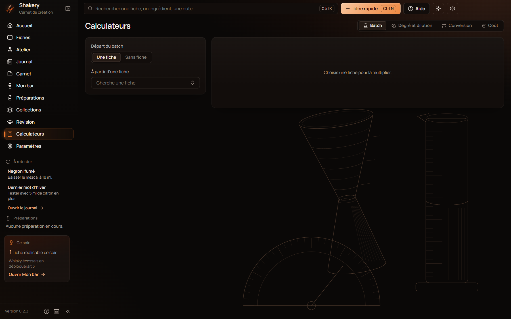

Shakery · refonte ergonomique · planche 10 sur 1024 novembre 2026
Calculateurs alignés sur Fiches
Avant

Ce qui change
- L’en-tête reprend la structure des autres pages, avec une ligne de contexte au-dessus du titre, et le titre Calculateurs se trouve exactement à la hauteur du titre de la page Fiches.
- Les onglets Batch, Degré et dilution, Conversion et Coût passent sous le titre, à gauche, à la place exacte du sélecteur de la page Fiches.
- La ligne de contexte décrit le calculateur affiché (« Multiplie une fiche pour préparer un service à l’avance. » pour Batch) et changerait avec l’onglet.
- Le reste de l’écran (panneau Départ du batch et zone de résultat) ne change pas.
À trancher
- La ligne de contexte doit-elle décrire l’onglet actif comme sur la planche, ou rester la même pour les quatre calculateurs ?
- Faut-il, dans une prochaine passe, retirer aussi les cartes des deux panneaux pour suivre la règle appliquée à l’accueil et aux fiches ?